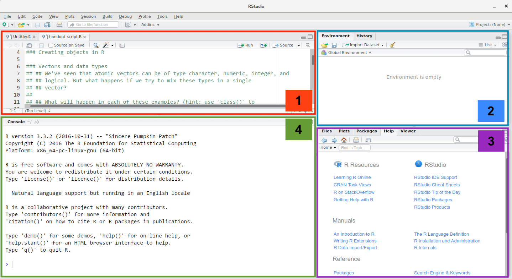

RStudio
Getting started in RStudio
is a programming language that is especially powerful for data exploration, visualization, and statistical analysis. “R” is also a software that interprets the scipts written using it. The most popular way to interact with R is by using RStudio. To get started you need to install R and RStudio on your computer.
In addition to being able to do all your statistics and graphing R/RStudio is a holds a work of opportunities, it is a never-ending tool that is constantly being updated. Before we know it R will be able to cook your dinner and go to the shops too! But for now check out its great range of features for project management. It can talk all types of coding languages, and is useful to keep track of exactly what you are doing (RMarkdown). You can even make your own webpage to help keep track of all that code and information, just like I am doing here!
üîó Some links to get you started:
An extra note
As a general rule these pages on RStudio are not meant as a stand alone tutorial/workflow to learn coding. Generally they includes lots of links to people who have done the hard work, and I just have a small subset of code that is relevant to my workflow or some common code chunks I use. So please read on with caution - mostly this is just a place for me to collate highly websites/tutorials/information that I have found useful during my research in one central location.
Learning R links
- Data Visualization class by Andrew Heiss, github link
- Tidymodels, github
- Stat 431 by Kelly Bodwin and Hunter Glanz
- Ready for R by Ted Laderas
- Data science heros
- R weekly

- Source pane - for your scripts and document
- Environment/history - lists all your variables loaded
- Files/Plots/Helper etc - here you can navigate to find (and upload) files, this is where your plots will appear when you view them, and its also here any
?helpinfo will appear - Console - this is running document of what code you have executed.
Need further convincing to user R…read on
Install (& updates)
Windows
If you already have R and RStudio installed:
- Open RStudio, and click on “Help” > “Check for updates”. If a new version is available, quit RStudio, and download the latest version for RStudio.
- To check which version of R you are using, start RStudio and the first thing that appears in the console indicates the version of R you are running. Alternatively, you can type
sessionInfo(), which will also display which version of R you are running. Go on the CRAN website and check whether a more recent version is available. If so, please download and install it. You can check here for more information on how to remove old versions from your system if you wish to do so.
If you don’t have R and RStudio installed:
- Download R from the CRAN website
- Run the
.exefile that was just downloaded - Go to the RStudio download page
- Under Installers select RStudio x.yy.zzz - Windows Vista/7/8/10 (where x, y, and z represent version numbers)
- Double click the file to install it
- Once it’s installed, open RStudio to make sure it works and you don’t get any error messages.
MacOS
If you already have R and RStudio installed:
- Open RStudio, and click on “Help” > “Check for updates”. If a new version is available, quit RStudio, and download the latest version for RStudio.
- To check the version of R you are using, start RStudio and the first thing that appears on the terminal indicates the version of R you are running. Alternatively, you can type
sessionInfo(), which will also display which version of R you are running. Go on the CRAN website and check whether a more recent version is available. If so, please download and install it.
If you don’t have R and RStudio installed:
- Download R from the CRAN website.
- Select the
.pkgfile for the latest R version - Double click on the downloaded file to install R
- It is also a good idea to install XQuartz (needed by some packages)
- Go to the RStudio download page
- Under Installers select RStudio x.yy.zzz - Mac OS X 10.6+ (64-bit) (where x, y, and z represent version numbers)
- Double click the file to install RStudio
- Once it’s installed, open RStudio to make sure it works and you don’t get any error messages.
Packages
No matter what you use RStudio for you’ll need to install some packages. Think of these as like add ins, there are loads out there. If they are available on CRAN you can install using install.packages("package"), if not on CRAN most will be downloading using devtools::install_github("package/repo"), just make sure you install.packages("devtools") first. You only need to install once so usually do this by typing straight into the Console and then you will need to load your packages using library(package), you can save the R environment so when you reopen it should be there but its a good idea to ensure you always load libraries you will need at the start of the session.
üîó Here‚Äôs some good places to start find packages: